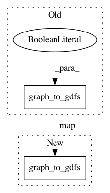

c46a77985576103fc92ac95395f4d8410f56f029,osmnx/distance.py,,get_nearest_edges,#,306
Before Change
)
// transform graph into DataFrame
edges = utils_graph.graph_to_gdfs(G, nodes=False, fill_edge_geometry=True)
// transform edges into evenly spaced points
edges["points"] = edges.apply(
lambda x: utils_geo.redistribute_vertices(x.geometry, dist), axis=1
After Change
)
// transform graph into DataFrame
edges = utils_graph.graph_to_gdfs(G, nodes=False).reset_index()
// transform edges into evenly spaced points
edges["points"] = edges.apply(
In pattern: SUPERPATTERN
Frequency: 3
Non-data size: 2
Instances
Project Name: gboeing/osmnx
Commit Name: c46a77985576103fc92ac95395f4d8410f56f029
Time: 2020-12-02
Author: boeing@usc.edu
File Name: osmnx/distance.py
Class Name:
Method Name: get_nearest_edges
Project Name: gboeing/osmnx
Commit Name: c46a77985576103fc92ac95395f4d8410f56f029
Time: 2020-12-02
Author: boeing@usc.edu
File Name: osmnx/distance.py
Class Name:
Method Name: get_nearest_edge